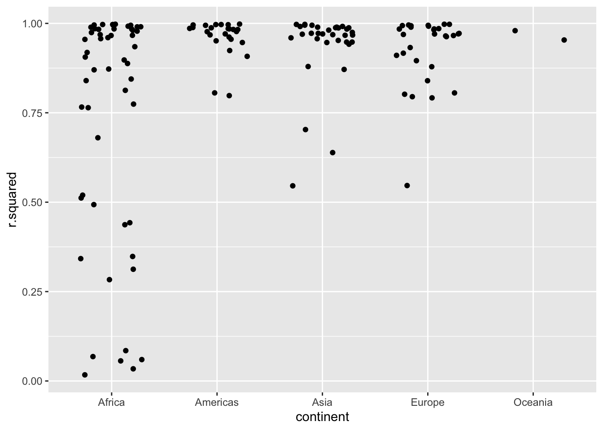

21 Getting, cleaning and using data
This will build on my content here, and integrate with it.
Some key resources are in a continually updated airtable HERE
See especially:
bookdown: Authoring Books and Technical Documents with R Markdown:
[OSF: ‘PhD Toolkit on Transparent, Open, Reproducible Research’ https://osf.io/g8yjz/](OSF: ‘PhD Toolkit on Transparent, Open, Reproducible Research’ https://osf.io/g8yjz/)
Happy Git and GitHub for the useR
“Data science for business” see WIP notes here
“Code and Data for the Social Sciences” (Gentzkow/Shapiro)
See also “notes on Data Science for Business”
21.1 Data: What/why/where/how
21.2 Organizing a project
21.3 Dynamic documents (esp Rmd/bookdown)
Some guidelines from a particular project:
21.3.1 Managing references/citations
A letter to my co-authors…
Hi all.
Hope you are doing well. I’ve just invited you to a shared Zotero group managing my bibliography/references. I think this should be useful. (I prefer Zotero to Mendeley because it’s open source and… I forgot the other reason.) On my computer it synchronizes with a .bib (bibtex) file in a dropbox folder …
For latex files we just refer to this as normal. In the Rmd files/bookdown (producing output like EA barriers or Metrics notes (present book) this is referenced in the YAML header to the index.Rmd file as
bibliography: [reinstein_bibtex.bib]
Then, to keep this file, I have a “download block” included in that same file (the first line with ‘dropbox’ is the key one).
The download code follows (remove the ‘eval=FALSE’ to get it to actually run)…
tryCatch( #trycatch lets us 'try' to execute and if there is an error, it does the thing *after* the braces, rather than crashing
{
download.file(url = "https://www.dropbox.com/s/3i8bjrgo8u08v5w/reinstein_bibtex.bib?raw=1", destfile = "reinstein_bibtex.bib") #download the bibtex database
download.file(url = "https://raw.githubusercontent.com/daaronr/dr-rstuff/master/bookdown_template/support/tufte_plus.css", destfile = here("support", "tufte_plus.css")) #this downloads the style file
}, error = function(e) {
print("you are not online, so we can't download")
}
)A fairly comprehensive discussion of tools for citation in R-markdown:
21.3.2 An example of dynamic code
Shapiro Wilk test for normality; professor salaries at some US university from the built in Cars data…
By the way, if anyone wants me to offer me a job at that university, it looks like a great deal!
prof_sal_shapiro_test <- shapiro.test(carData::Salaries$salary)
# ShapiroTest <- map_df(list(SXDonShapiroTest, EXDonShapiroTest), tidy)
# (ShapiroTest <- kable(ShapiroTest) %>% kable_styling())The results from the Shapiro Wilk normality test …
The p-values are 6.07605182361928e-09 suggesting this data is not normal
21.4 Project management tools, esp. Git/Github
(More to be added/linked here)
See ‘Git and GitHub’ here… watch this space
For students and research assistants, I’ve been sending first time git users/developers to this:https://t.co/P6KQpXHCWI
+ https://t.co/q4R4Ei5Biw— Nathan Lane (@straightedge) September 14, 2019
21.5 Good coding practices
21.5.1 New tools and approaches to data (esp ‘tidyverse’)
From Kurtz:
If you are new to tidyverse-style syntax, possibly the oddest component is the pipe (i.e.,
%>%). I’m not going to explain the%>%in this project, but you might learn more about in this brief clip, starting around minute 21:25 in this talk by Wickham, or in section 5.6.1 from Grolemund and Wickham’s R for Data Science. Really, all of Chapter 5 of R4DS is just great for new R and new tidyverse users. And R4DS Chapter 3 is a nice introduction to plotting with ggplot2.
21.5.2 Style and consistency
lower_snake_case
Use lower_snake_case to name all objects (that’s my preference anyways) unless there’s a strong reason to do otherwise.
This includes:
file_names.txt folder_names function_names (with few exceptions) names_of_data_objects_like_vectors names_of_data_output_objects_like_correlation_coefficients ex_df1 In R you probably should keep data frame names short to avoid excessive typing
And by all that is holy, never put spaces or slashes in file or object names! This can make it very hard to process across systems… there are various ways of referring to spaces and other white space.
21.5.2.1 Indenting and spacing
21.5.3 Using functions, variable lists, etc., for clean, concise, readable code
21.5.4 Mapping over lists to produce results
21.5.5 Building results based on ‘lists of filters’ of the data set
In writing a paper you very often want to produce ‘statistics A-F for subsets S1-S5.’
Can’t we just automate this?
We can store a filter as a character vector and then apply it
selection_statement <- "Species == 'setosa' & Petal.Width>0.3"
iris %>%
as.tibble() %>%
filter(rlang::eval_tidy(rlang::parse_expr(selection_statement)))## # A tibble: 9 x 5
## Sepal.Length Sepal.Width Petal.Length Petal.Width Species
## <dbl> <dbl> <dbl> <dbl> <fct>
## 1 5.4 3.9 1.7 0.4 setosa
## 2 5.7 4.4 1.5 0.4 setosa
## 3 5.4 3.9 1.3 0.4 setosa
## 4 5.1 3.7 1.5 0.4 setosa
## 5 5.1 3.3 1.7 0.5 setosa
## 6 5 3.4 1.6 0.4 setosa
## 7 5.4 3.4 1.5 0.4 setosa
## 8 5 3.5 1.6 0.6 setosa
## 9 5.1 3.8 1.9 0.4 setosaMaking this a function for later use:
selection_statement <- "Species == 'setosa' & Petal.Width>0.3"
filter_parse = function(df, x) {
{{df}} %>%
filter(rlang::eval_tidy(rlang::parse_expr({{x}})))
}
iris %>%
as.tibble() %>%
filter_parse(selection_statement)## # A tibble: 9 x 5
## Sepal.Length Sepal.Width Petal.Length Petal.Width Species
## <dbl> <dbl> <dbl> <dbl> <fct>
## 1 5.4 3.9 1.7 0.4 setosa
## 2 5.7 4.4 1.5 0.4 setosa
## 3 5.4 3.9 1.3 0.4 setosa
## 4 5.1 3.7 1.5 0.4 setosa
## 5 5.1 3.3 1.7 0.5 setosa
## 6 5 3.4 1.6 0.4 setosa
## 7 5.4 3.4 1.5 0.4 setosa
## 8 5 3.5 1.6 0.6 setosa
## 9 5.1 3.8 1.9 0.4 setosaWe can do the same for a list of character vectors of filter statements, and apply each filter from the list to the dataframe, and then the output function:
sel_st <- c("Species == 'setosa' & Petal.Width>0.3", "Species == 'virginica' & Petal.Width>2.4")
map(iris, selection_statement)## $Sepal.Length
## NULL
##
## $Sepal.Width
## NULL
##
## $Petal.Length
## NULL
##
## $Petal.Width
## NULL
##
## $Species
## NULLsel_st %>% map(~ filter_parse(iris, .x))## [[1]]
## Sepal.Length Sepal.Width Petal.Length Petal.Width Species
## 1 5.4 3.9 1.7 0.4 setosa
## 2 5.7 4.4 1.5 0.4 setosa
## 3 5.4 3.9 1.3 0.4 setosa
## 4 5.1 3.7 1.5 0.4 setosa
## 5 5.1 3.3 1.7 0.5 setosa
## 6 5.0 3.4 1.6 0.4 setosa
## 7 5.4 3.4 1.5 0.4 setosa
## 8 5.0 3.5 1.6 0.6 setosa
## 9 5.1 3.8 1.9 0.4 setosa
##
## [[2]]
## Sepal.Length Sepal.Width Petal.Length Petal.Width Species
## 1 6.3 3.3 6.0 2.5 virginica
## 2 7.2 3.6 6.1 2.5 virginica
## 3 6.7 3.3 5.7 2.5 virginicaIt works nicely if you have a list of filters aligned with a list of names or other objects ‘specific to each filter’
(Code below: adapt to public data and explain)
bal_sx <-
map2(subsets_sx_dur, subsets_sx_dur_name, function(x, y) {
filter_parse(sa, x) %>%
dplyr::filter(stage == "2") %>%
tabyl(treat_1, treat_2, show_missing_levels = FALSE) %>%
adornme_not(cap = paste(y, "; 1st and 2nd stage treatments"))
}
)21.5.6 Coding style and indenting in Stata (one approach)
I indent every line except
clear, import, save, merge (‘file operations’)
- except where these occur as part of a loop, in which case I put in an ‘important comment’ noting these operations
lines that call other do files
important comments/flags/to-do’s
I only put ‘small todo’ elements having to do with code in a code file itself (and even then there may be better places). If we are going to put todos I suggest we include #todo to search for these later (and R has a utility to collect these in a nice way… maybe Stata does too.
Whenever there are more than 20 lines of something prosaic that cannot/has not been put into a loop or function, I suggest we put it in a separate ‘do’ file and call that do file (with no indent). That’s what I do here, giving a brief description and a ‘back link.’ Sometimes I put all those do files into an separate folder.
21.6 Additional tips (integrate)
When you have to upgrade R on Mac, how to preserve package installations - twitter thread
- This worked well for me. Thanks @ivelasq3 !
Are you teaching/learning #r #rstats & want to teach/learn the latest #tidyverse #tidyr tools? e.g. bind_rows, pivot_wider/pivot_longer, the join family (full_join, inner_join…) Check out my slides on “Advanced data manipulation” here 😺https://t.co/dr9VNx7MFf
— Amy Willis (@AmyDWillis) November 16, 2019
Tools for structuring your workflow for reproducable code with Rmd and Git: The workflowr package
“This paper does a thorough job setting out the rationale, design, and implementation of the workflowr package” says @PeteHaitch \(WEHI_research?) in his review of this #softwaretool article introducing workflowr by @jdblischak and co-authors https://t.co/ZXmQkDhFuD #OpenScience pic.twitter.com/e77SVo8PhO
— F1000Research (@F1000Research) November 17, 2019
Switching from Latex to markdown/R-markdown? These tips from Colin Bousige look pretty good, although I prefer the bookdown/gitbook format
Massive data cleaning using the Recipe package
Codebook package
Some key points from R for data science (see my hypothesis notes)
Automating ‘many models’
library(gapminder)
library(modelr)
library(tidyverse)Extract out the common code with a function and repeat using a map function from
purrr. This problem is structured a little differently to what you’ve seen before. Instead of repeating an action for each variable, we want to repeat an action for each country, a subset of rows. To do that, we need a new data structure: the nested data frame. To create a nested data frame we start with a grouped data frame, and “nest” it:
by_country <- gapminder %>%
group_by(country, continent) %>%
nest() #automatically labels a list column (column of tibbles, which are lists) as 'data'This creates a data frame that has one row per group (per country), and a rather unusual column:
data.datais a list of data frames (or tibbles, to be precise).
in a nested data frame, each row is a group.
We have a model-fitting function:
country_model <- function(df) {
lm(lifeExp ~ year, data = df)
}The data frames are in a list, so we can use
purrr::map()to applycountry_modelto each element…
However, rather than leaving the list of models as a free-floating object, I think it’s better to store it as a column in the
by_countrydata frame.
(
by_country <- by_country %>%
mutate(model = map(data, country_model))
)## # A tibble: 142 x 4
## # Groups: country, continent [142]
## country continent data model
## <fct> <fct> <list> <list>
## 1 Afghanistan Asia <tibble[,4] [12 × 4]> <lm>
## 2 Albania Europe <tibble[,4] [12 × 4]> <lm>
## 3 Algeria Africa <tibble[,4] [12 × 4]> <lm>
## 4 Angola Africa <tibble[,4] [12 × 4]> <lm>
## 5 Argentina Americas <tibble[,4] [12 × 4]> <lm>
## 6 Australia Oceania <tibble[,4] [12 × 4]> <lm>
## 7 Austria Europe <tibble[,4] [12 × 4]> <lm>
## 8 Bahrain Asia <tibble[,4] [12 × 4]> <lm>
## 9 Bangladesh Asia <tibble[,4] [12 × 4]> <lm>
## 10 Belgium Europe <tibble[,4] [12 × 4]> <lm>
## # … with 132 more rowsHere, the model list-column is created, resulting from mapping the data list-column (list of tibbles) into the country_model function.
because all the related objects are stored together, you don’t need to manually keep them in sync when you filter or arrange.
To compute the residuals, we need to call add_residuals() with each model-data pair:
by_country <- by_country %>%
mutate(
resids = map2(data, model, add_residuals)
)
by_country## # A tibble: 142 x 5
## # Groups: country, continent [142]
## country continent data model resids
## <fct> <fct> <list> <list> <list>
## 1 Afghanistan Asia <tibble[,4] [12 × 4]> <lm> <tibble[,5] [12 × 5]>
## 2 Albania Europe <tibble[,4] [12 × 4]> <lm> <tibble[,5] [12 × 5]>
## 3 Algeria Africa <tibble[,4] [12 × 4]> <lm> <tibble[,5] [12 × 5]>
## 4 Angola Africa <tibble[,4] [12 × 4]> <lm> <tibble[,5] [12 × 5]>
## 5 Argentina Americas <tibble[,4] [12 × 4]> <lm> <tibble[,5] [12 × 5]>
## 6 Australia Oceania <tibble[,4] [12 × 4]> <lm> <tibble[,5] [12 × 5]>
## 7 Austria Europe <tibble[,4] [12 × 4]> <lm> <tibble[,5] [12 × 5]>
## 8 Bahrain Asia <tibble[,4] [12 × 4]> <lm> <tibble[,5] [12 × 5]>
## 9 Bangladesh Asia <tibble[,4] [12 × 4]> <lm> <tibble[,5] [12 × 5]>
## 10 Belgium Europe <tibble[,4] [12 × 4]> <lm> <tibble[,5] [12 × 5]>
## # … with 132 more rowsCoding note: How does this syntax work? How do data and model end up referring to columns in the by_country tibble?
Because it’s inside the ‘mutate,’ I guess, so the data frame is implied.
[So that we can plot it] … let’s turn the list of data frames back into a regular data frame. Previously we used
nest()to turn a regular data frame into an nested data frame, and now we do the opposite withunnest():
(Note it’s saved as a different object for now)
resids <- unnest(by_country, resids)
resids## # A tibble: 1,704 x 9
## # Groups: country, continent [142]
## country continent data model year lifeExp pop gdpPercap resid
## <fct> <fct> <list> <list> <int> <dbl> <int> <dbl> <dbl>
## 1 Afghanistan Asia <tibble[,4] [12 × 4]> <lm> 1952 28.8 8425333 779. -1.11
## 2 Afghanistan Asia <tibble[,4] [12 × 4]> <lm> 1957 30.3 9240934 821. -0.952
## 3 Afghanistan Asia <tibble[,4] [12 × 4]> <lm> 1962 32.0 10267083 853. -0.664
## 4 Afghanistan Asia <tibble[,4] [12 × 4]> <lm> 1967 34.0 11537966 836. -0.0172
## 5 Afghanistan Asia <tibble[,4] [12 × 4]> <lm> 1972 36.1 13079460 740. 0.674
## 6 Afghanistan Asia <tibble[,4] [12 × 4]> <lm> 1977 38.4 14880372 786. 1.65
## 7 Afghanistan Asia <tibble[,4] [12 × 4]> <lm> 1982 39.9 12881816 978. 1.69
## 8 Afghanistan Asia <tibble[,4] [12 × 4]> <lm> 1987 40.8 13867957 852. 1.28
## 9 Afghanistan Asia <tibble[,4] [12 × 4]> <lm> 1992 41.7 16317921 649. 0.754
## 10 Afghanistan Asia <tibble[,4] [12 × 4]> <lm> 1997 41.8 22227415 635. -0.534
## # … with 1,694 more rows#and then we plot it
resids %>%
ggplot(aes(year, resid)) +
geom_line(aes(group = country), alpha = 1 / 3) +
geom_smooth(se = FALSE) +
facet_wrap(~continent)
glance <- by_country %>%
mutate(glance = map(model, broom::glance)) %>%
unnest(glance)Above, we add a column glance, resulting from mapping the model column to the broom::glance function. glance gets some key elements of the models’ outputs.
Then we unnest this column. Note that unnest spreads out the elements of the glance output into columns, but as these are specific to each country (but not each year), it doesn’t add more rows (while, e,g., unnesting resids would add more rows).
One way of judging the ‘fit’ of these models… The worst-fitting ones, in terms of R-squared, seem to be in Africa (we save the worst ones as bad_fit:
glance %T>%
arrange(r.squared) %T>% print() %>% #look I get both in one pipe flow with T-pipe and the 'print' side effect
ggplot(aes(continent, r.squared)) +
geom_jitter(width = 0.3) ## # A tibble: 142 x 17
## # Groups: country, continent [142]
## country continent data model resids r.squared adj.r.squared sigma statistic p.value df logLik
## <fct> <fct> <list> <lis> <list> <dbl> <dbl> <dbl> <dbl> <dbl> <dbl> <dbl>
## 1 Afghani… Asia <tibb… <lm> <tibbl… 0.948 0.942 1.22 181. 9.84e- 8 1 -18.3
## 2 Albania Europe <tibb… <lm> <tibbl… 0.911 0.902 1.98 102. 1.46e- 6 1 -24.1
## 3 Algeria Africa <tibb… <lm> <tibbl… 0.985 0.984 1.32 662. 1.81e-10 1 -19.3
## 4 Angola Africa <tibb… <lm> <tibbl… 0.888 0.877 1.41 79.1 4.59e- 6 1 -20.0
## 5 Argenti… Americas <tibb… <lm> <tibbl… 0.996 0.995 0.292 2246. 4.22e-13 1 -1.17
## 6 Austral… Oceania <tibb… <lm> <tibbl… 0.980 0.978 0.621 481. 8.67e-10 1 -10.2
## 7 Austria Europe <tibb… <lm> <tibbl… 0.992 0.991 0.407 1261. 7.44e-12 1 -5.16
## 8 Bahrain Asia <tibb… <lm> <tibbl… 0.967 0.963 1.64 291. 1.02e- 8 1 -21.9
## 9 Banglad… Asia <tibb… <lm> <tibbl… 0.989 0.988 0.977 930. 3.37e-11 1 -15.7
## 10 Belgium Europe <tibb… <lm> <tibbl… 0.995 0.994 0.293 1822. 1.20e-12 1 -1.20
## # … with 132 more rows, and 5 more variables: AIC <dbl>, BIC <dbl>, deviance <dbl>, df.residual <int>,
## # nobs <int>
bad_fit <- filter(glance, r.squared < 0.25)
What may have caused the “bad fit,” i.e., a departure from the country-specific trends?
We semi_join the original data set to these ‘worst fitting countries’ … this keeps only those that match, i.e., only the worst-fitting countries. (Probably we could otherwise have instead expanded the data list?)
gapminder %>%
semi_join(bad_fit, by = "country") %>% #I think this just 'keeps all elements of the first df that are also present in the second frame
ggplot(aes(year, lifeExp, colour = country)) +
geom_line()
We see two main effects here: the tragedies of the HIV/AIDS epidemic and the Rwandan genocide.
21.6.0.1 List-columns
Now that you’ve seen a basic workflow for managing many models… let’s dive… into some of the details
We saw a workflow for managing
split the data apart
run the same model model for each of the groups
save this all in a single organized tibble
report and graph the results in different ways
a data frame is a named list of equal length vectors.
data.frame(x = list(1:3, 3:5))## x.1.3 x.3.5
## 1 1 3
## 2 2 4
## 3 3 5But incorporating list columns is much easier with tibble and tribble , because tibble() doesn’t modify its inputs, and prints better:
tibble(
x = list(1:3, 3:5),
y = c("1, 2", "3, 4, 5")
)## # A tibble: 2 x 2
## x y
## <list> <chr>
## 1 <int [3]> 1, 2
## 2 <int [3]> 3, 4, 5<div class="marginnote">
But note each column still has to have the same number of rows.
</div>
And tribble() (row-wise tibble creation) “can automatically work out that you need a list:”
tribble(
~x, ~y,
1:3, "1, 2",
3:5, "3, 4, 5"
)## # A tibble: 2 x 2
## x y
## <list> <chr>
## 1 <int [3]> 1, 2
## 2 <int [3]> 3, 4, 5List-columns are often most useful as intermediate data structure. [to keep things organised before later unnesting or whatever]
Generally there are three parts of an effective list-column pipeline:
- You create the list-column using one of
nest(),summarise()+list(), ormutate()+ a map function, as described in Creating list-columns.- You create other intermediate list-columns by transforming existing list columns with
map(),map2()orpmap(). For example, in the case study above, we created a list-column of models by transforming a list-column of data frames.- You simplify the list-column back down to a data frame or atomic vector, as described in Simplifying list-columns.
21.6.0.1.1 Creating list-columns
Typically, you’ll … [create] list columns them from regular columns, [either]:
With
tidyr::nest()to convert a grouped data frame into a nested data frame where you have list-columns of data frames.With
mutate()and vectorised functions that return a list.With
summarise()and summary functions that return multiple results.Alternatively, you might create them from a named list, using
tibble::enframe().… make sure they’re homogeneous: each element should contain the same type of thing.
21.6.0.1.2 With nesting
nest()creates … a data frame with a list-column of data frames. … each row is a meta-observation:When applied to a grouped data frame,
nest()keeps the grouping columns as is, and bundles everything else into the list-column:
gapminder %>%
group_by(country, continent) %>%
nest()## # A tibble: 142 x 3
## # Groups: country, continent [142]
## country continent data
## <fct> <fct> <list>
## 1 Afghanistan Asia <tibble[,4] [12 × 4]>
## 2 Albania Europe <tibble[,4] [12 × 4]>
## 3 Algeria Africa <tibble[,4] [12 × 4]>
## 4 Angola Africa <tibble[,4] [12 × 4]>
## 5 Argentina Americas <tibble[,4] [12 × 4]>
## 6 Australia Oceania <tibble[,4] [12 × 4]>
## 7 Austria Europe <tibble[,4] [12 × 4]>
## 8 Bahrain Asia <tibble[,4] [12 × 4]>
## 9 Bangladesh Asia <tibble[,4] [12 × 4]>
## 10 Belgium Europe <tibble[,4] [12 × 4]>
## # … with 132 more rowsYou can also use it on an ungrouped data frame, specifying which columns you want to nest [i.e., all but country and continent below]
gapminder %>%
nest(data = c(year:gdpPercap))## # A tibble: 142 x 3
## country continent data
## <fct> <fct> <list>
## 1 Afghanistan Asia <tibble[,4] [12 × 4]>
## 2 Albania Europe <tibble[,4] [12 × 4]>
## 3 Algeria Africa <tibble[,4] [12 × 4]>
## 4 Angola Africa <tibble[,4] [12 × 4]>
## 5 Argentina Americas <tibble[,4] [12 × 4]>
## 6 Australia Oceania <tibble[,4] [12 × 4]>
## 7 Austria Europe <tibble[,4] [12 × 4]>
## 8 Bahrain Asia <tibble[,4] [12 × 4]>
## 9 Bangladesh Asia <tibble[,4] [12 × 4]>
## 10 Belgium Europe <tibble[,4] [12 × 4]>
## # … with 132 more rows21.6.0.1.3 From vectorised functions
.. functions take an atomic vector and return a list, e.g.,
stringr::str_split()…
df <- tribble(
~x1,
"a,b,c",
"d,e,f,g"
)
df %>%
mutate(x2 = stringr::str_split(x1, ",")) ## # A tibble: 2 x 2
## x1 x2
## <chr> <list>
## 1 a,b,c <chr [3]>
## 2 d,e,f,g <chr [4]>Above, str_split generates a list from each element of a character vector … this x2 is generated as a list-vector.
You can then unnest … which will spread it out:
df %>%
mutate(x2 = stringr::str_split(x1, ",")) %>%
unnest(x2)## # A tibble: 7 x 2
## x1 x2
## <chr> <chr>
## 1 a,b,c a
## 2 a,b,c b
## 3 a,b,c c
## 4 d,e,f,g d
## 5 d,e,f,g e
## 6 d,e,f,g f
## 7 d,e,f,g g(Not sure when I would use the above?)
Another example … using the
map(),map2(),pmap()from purrr.
sim <- tribble(
~f, ~params,
"runif", list(min = -1, max = 1),
"rnorm", list(sd = 5),
"rpois", list(lambda = 10)
)
(xxx<- sim %>%
mutate(sims = invoke_map(f, params, n = 10))
) # the invoke_map syntax is deprecated, but I can't figure out the new syntax## # A tibble: 3 x 3
## f params sims
## <chr> <list> <list>
## 1 runif <named list [2]> <dbl [10]>
## 2 rnorm <named list [1]> <dbl [10]>
## 3 rpois <named list [1]> <int [10]>21.6.0.1.4 From multivalued summaries
f
summarise()… only works with summary functions that return a single value. … not functions likequantile()that return a vector of arbitrary length:
mtcars %>%
group_by(cyl) %>%
summarise(q = quantile(mpg)) #this now seems to run?## # A tibble: 15 x 2
## # Groups: cyl [3]
## cyl q
## <dbl> <dbl>
## 1 4 21.4
## 2 4 22.8
## 3 4 26
## 4 4 30.4
## 5 4 33.9
## 6 6 17.8
## 7 6 18.6
## 8 6 19.7
## 9 6 21
## 10 6 21.4
## 11 8 10.4
## 12 8 14.4
## 13 8 15.2
## 14 8 16.2
## 15 8 19.2You can however, wrap the result in a list! This obeys the contract of
summarise(), because each summary is now a list (a vector) of length 1.
mtcars %>%
group_by(cyl) %>%
summarise(q = list(quantile(mpg)))## # A tibble: 3 x 2
## cyl q
## <dbl> <list>
## 1 4 <dbl [5]>
## 2 6 <dbl [5]>
## 3 8 <dbl [5]>OK this is neater
To make useful results with unnest, you’ll also need to capture the probabilities:
probs <- c(0.01, 0.25, 0.5, 0.75, 0.99)
mtcars %>%
group_by(cyl) %>%
summarise(p = list(probs), q = list(quantile(mpg, probs))) %>%
unnest(c(p, q))## # A tibble: 15 x 3
## cyl p q
## <dbl> <dbl> <dbl>
## 1 4 0.01 21.4
## 2 4 0.25 22.8
## 3 4 0.5 26
## 4 4 0.75 30.4
## 5 4 0.99 33.8
## 6 6 0.01 17.8
## 7 6 0.25 18.6
## 8 6 0.5 19.7
## 9 6 0.75 21
## 10 6 0.99 21.4
## 11 8 0.01 10.4
## 12 8 0.25 14.4
## 13 8 0.5 15.2
## 14 8 0.75 16.2
## 15 8 0.99 19.121.6.1 From a named list
Data frames with list-columns provide a solution to a common problem: what do you do if you want to iterate over both the contents of a list and its elements? Instead of trying to jam everything into one object, it’s often easier to make a data frame: one column can contain the elements, and one column can contain the list. An easy way to create such a data frame from a list is tibble::enframe().
x <- list(
a = 1:5,
b = 3:4,
c = 5:6
)
df <- enframe(x)
df## # A tibble: 3 x 2
## name value
## <chr> <list>
## 1 a <int [5]>
## 2 b <int [2]>
## 3 c <int [2]>The advantage of this structure is that it generalises in a straightforward way - names are useful if you have character vector of metadata, but don’t help if you have other types of data, or multiple vectors.
Now if you want to iterate over names and values in parallel, you can use map2():
df %>%
mutate(
smry = map2_chr(name, value, ~ stringr::str_c(.x, ": ", .y[1]))
)## # A tibble: 3 x 3
## name value smry
## <chr> <list> <chr>
## 1 a <int [5]> a: 1
## 2 b <int [2]> b: 3
## 3 c <int [2]> c: 521.6.1.0.1 Simplifying list-columns
To apply the techniques of data manipulation and visualisation you’ve learned in this book, you’ll need to simplify the list-column back to a regular column (an atomic vector), or set of columns. The technique you’ll use to collapse back down to a simpler structure depends on whether you want a single value per element, or multiple values:
If you want a single value, use
mutate()withmap_lgl(),map_int(),map_dbl(), andmap_chr()to create an atomic vector.If you want many values, use
unnest()to convert list-columns back to regular columns, repeating the rows as many times as necessary.
These are described in more detail below.
21.6.2 List to vector
If you can reduce your list column to an atomic vector then it will be a regular column. For example, you can always summarise an object with its type and length, so this code will work regardless of what sort of list-column you have:
df <- tribble(
~x,
letters[1:5],
1:3,
runif(5)
)
df %>% mutate(
type = map_chr(x, typeof),
length = map_int(x, length)
)## # A tibble: 3 x 3
## x type length
## <list> <chr> <int>
## 1 <chr [5]> character 5
## 2 <int [3]> integer 3
## 3 <dbl [5]> double 5This is the same basic information that you get from the default tbl print method, but now you can use it for filtering. This is a useful technique if you have a heterogeneous list, and want to filter out the parts aren’t working for you.
Don’t forget about the map_*() shortcuts - you can use map_chr(x, "apple") to extract the string stored in apple for each element of x. This is useful for pulling apart nested lists into regular columns. Use the .null argument to provide a value to use if the element is missing (instead of returning NULL):
df <- tribble(
~x,
list(a = 1, b = 2),
list(a = 2, c = 4)
)
df %>% mutate(
a = map_dbl(x, "a"),
b = map_dbl(x, "b", .null = NA_real_)
)## # A tibble: 2 x 3
## x a b
## <list> <dbl> <dbl>
## 1 <named list [2]> 1 2
## 2 <named list [2]> 2 NA21.6.3 Unnesting
unnest() works by repeating the regular columns once for each element of the list-column. For example, in the following very simple example we repeat the first row 4 times (because there the first element of y has length four), and the second row once:
tibble(x = 1:2, y = list(1:4, 1)) %>% unnest(y)## # A tibble: 5 x 2
## x y
## <int> <dbl>
## 1 1 1
## 2 1 2
## 3 1 3
## 4 1 4
## 5 2 1This means that you can’t simultaneously unnest two columns that contain different number of elements:
# Ok, because y and z have the same number of elements in
# every row
df1 <- tribble(
~x, ~y, ~z,
1, c("a", "b"), 1:2,
2, "c", 3
)
df1## # A tibble: 2 x 3
## x y z
## <dbl> <list> <list>
## 1 1 <chr [2]> <int [2]>
## 2 2 <chr [1]> <dbl [1]>df1 %>% unnest(c(y, z))## # A tibble: 3 x 3
## x y z
## <dbl> <chr> <dbl>
## 1 1 a 1
## 2 1 b 2
## 3 2 c 3# Doesn't work because y and z have different number of elements
df2 <- tribble(
~x, ~y, ~z,
1, "a", 1:2,
2, c("b", "c"), 3
)
df2## # A tibble: 2 x 3
## x y z
## <dbl> <list> <list>
## 1 1 <chr [1]> <int [2]>
## 2 2 <chr [2]> <dbl [1]>df2 %>% unnest(c(y, z))## # A tibble: 4 x 3
## x y z
## <dbl> <chr> <dbl>
## 1 1 a 1
## 2 1 a 2
## 3 2 b 3
## 4 2 c 3The same principle applies when unnesting list-columns of data frames. You can unnest multiple list-cols as long as all the data frames in each row have the same number of rows.
21.6.4
21.7 Making tidy data with broom
The broom package provides three general tools for turning models into tidy data frames:
broom::glance(model)returns a row for each model. Each column gives a model summary: either a measure of model quality, or complexity, or a combination of the two.broom::tidy(model)returns a row for each coefficient in the model. Each column gives information about the estimate or its variability.broom::augment(model, data)returns a row for each row indata, adding extra values like residuals, and influence statistics.
test_models <- tribble(
~df, ~filter, ~y, ~x, ~model, ~family,
"mtcars", "disp>100", "mpg", "wt, gear","lm", "",
"mtcars", "disp<100", "mpg", "wt, gear, hp", "lm", "",
"mtcars", "", "vs", "wt, gear, hp", "glm", "binomial",
"cars", "", "speed", "dist", "lm", ""
)I want it to run
mtcars %>% filter(disp>100) %>% lm(mpg ~ wt + gear, data =.) ##
## Call:
## lm(formula = mpg ~ wt + gear, data = .)
##
## Coefficients:
## (Intercept) wt gear
## 31.3800 -3.8854 0.0609mtcars %>% filter(disp<100) %>% lm(mpg ~ wt + gear + hp, data =.) ##
## Call:
## lm(formula = mpg ~ wt + gear + hp, data = .)
##
## Coefficients:
## (Intercept) wt gear hp
## 25.1383 1.8527 0.7982 -0.0136mtcars %>% filter() %>% glm(vs ~ wt + gear + hp, data =., family="binomial") ##
## Call: glm(formula = vs ~ wt + gear + hp, family = "binomial", data = .)
##
## Coefficients:
## (Intercept) wt gear hp
## 11.1757 0.5555 -0.6472 -0.0851
##
## Degrees of Freedom: 31 Total (i.e. Null); 28 Residual
## Null Deviance: 44
## Residual Deviance: 16 AIC: 24cars %>% filter() %>% lm(speed ~ dist,data =.) ##
## Call:
## lm(formula = speed ~ dist, data = .)
##
## Coefficients:
## (Intercept) dist
## 8.284 0.166